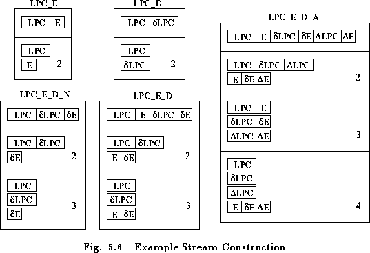

Next: 5.11 Vector Quantisation
Up: 5 Speech Input/Output
Previous: 5.9 Direct Audio Input/Output
As noted in section 5.1, HTK tools regard the input observation
sequence as being divided into a number of independent data streams.
For building continuous density HMM systems, this facility is of limited
use and by far the most common case is that of a single data stream.
However, when building tied-mixture systems or when
using vector quantisation, a more uniform coverage of the
acoustic space is obtained by separating energy, deltas, etc., into
separate streams.
This separation of parameter vectors into streams takes place at
the point where the vectors
are extracted from the converted input file or audio device and
transformed into an observation. The tools for HMM construction
and for recognition thus view the input data as a sequence of observations
but note that this entirely internal to HTK. Externally data is
always stored as a single sequence of parameter vectors.
When multiple streams are required,
the division of the parameter vectors is performed automatically
based on the parameter kind. This works according
to the following rules.
- 1 stream
- single parameter vector. This is the default case.
- 2 streams
- if the parameter vector contains energy terms, then
they are extracted and placed in stream 2. Stream 1 contains the
remaining static coefficients and their deltas and accelerations,
if any. Otherwise,
the parameter vector must have appended delta
coefficients and no appended acceleration coefficients.
The vector is then split so that the static
coefficients form stream 1 and
the corresponding delta coefficients form stream 2.
- 3 streams
-
if the parameter vector has acceleration coefficients, then vector
is split with static coefficients plus any energy in stream 1,
delta coefficients plus any delta energy in stream 2 and
acceleration coefficients plus any acceleration energy in stream 3.
Otherwise, the parameter vector must include log energy and
must have appended delta coefficients. The vector is then split
into three parts so that the static coefficients form stream
1, the delta coefficients form stream 2, and the log energy
and delta log energy are combined to form stream 3.
- 4 streams
-
the parameter vector must include log energy and
must have appended delta and acceleration coefficients.
The vector is split into 4 parts so that the static coefficients form stream
1, the delta coefficients form stream 2, the acceleration
coefficients form stream 3 and the log energy, delta energy
and acceleration energy are combined to form stream 4.
In all cases,
the static log energy can be
suppressed (via the _N qualifier).
If none of the above rules apply for some required number of
streams, then the parameter vector is simply incompatible with that
form of observation. For example, the parameter kind LPC_D_A
cannot be split into 2 streams, instead 3 streams should be used.

Fig. 5.6 illustrates the way that streams are constructed
for a number of common cases. As earlier, the choice of LPC
as the static coefficients is purely for illustration and the same
mechanism applies to all base parameter kinds.
As discussed further in the next section,
multiple data streams are often used with vector quantised data. In this
case, each VQ symbol per input sample is placed in a separate data stream.
Next: 5.11 Vector Quantisation
Up: 5 Speech Input/Output
Previous: 5.9 Direct Audio Input/Output
ECRL HTK_V2.1: email support@entropic.com